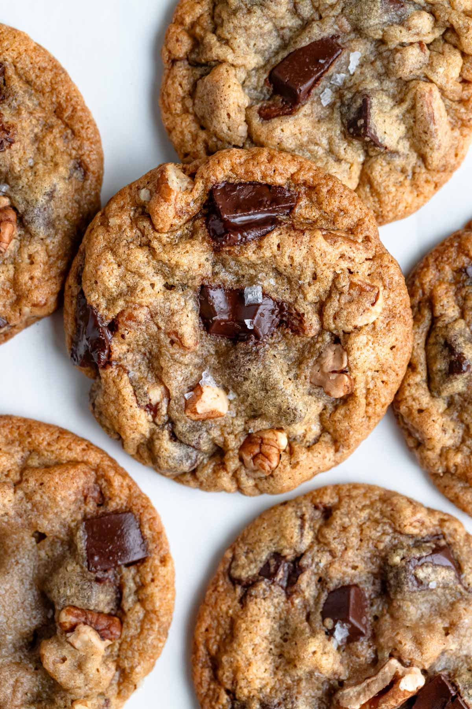
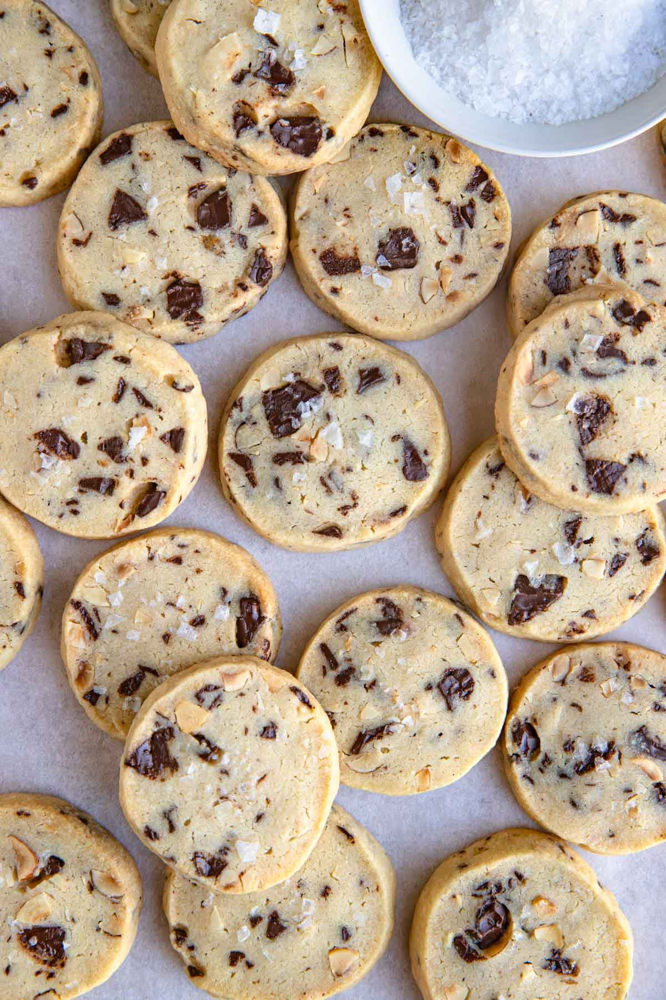
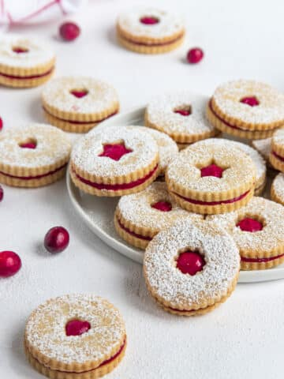
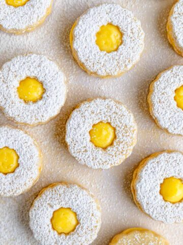
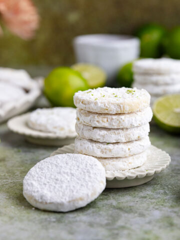
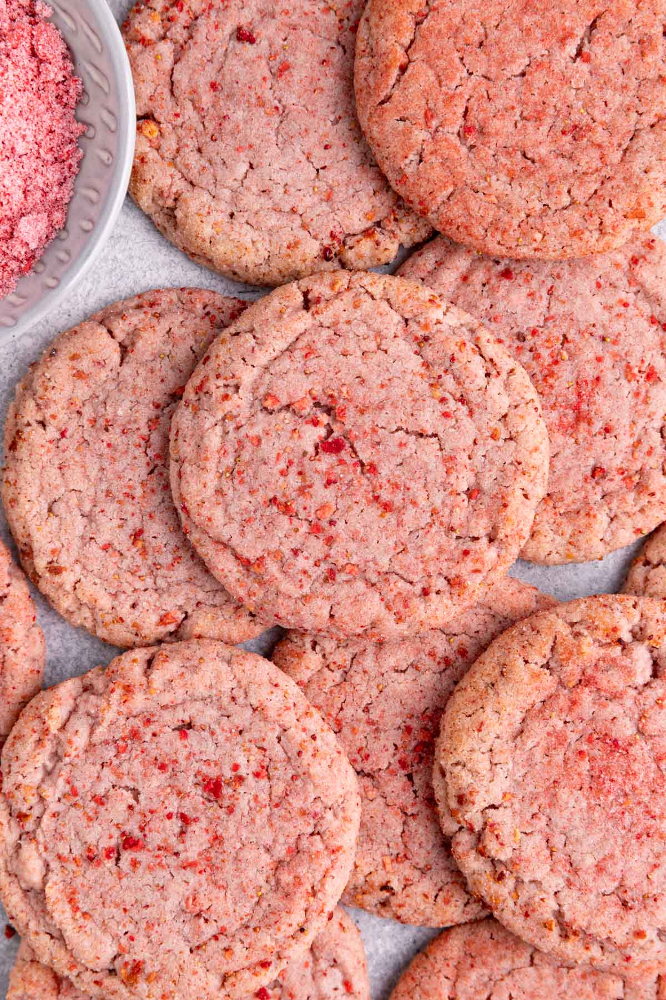
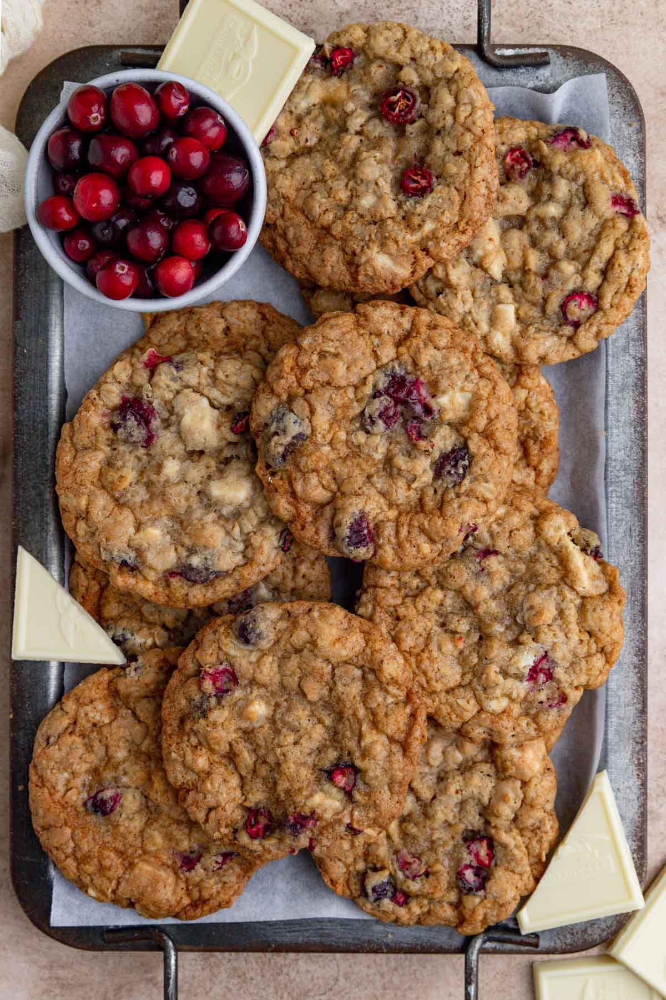
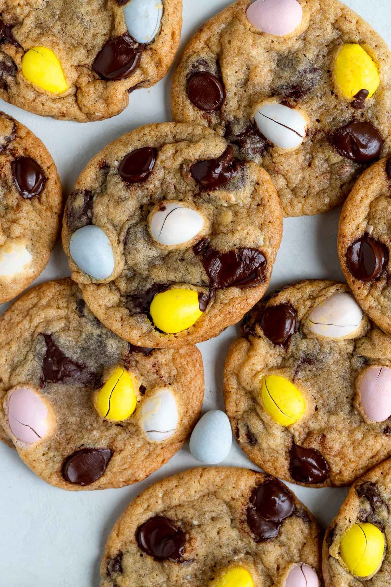
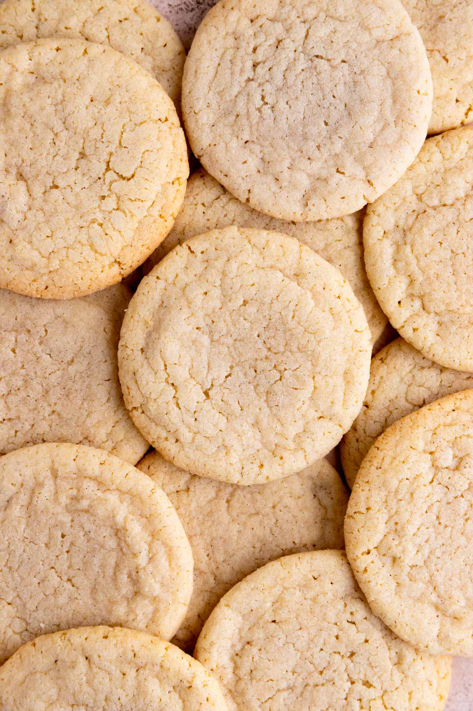

Enjoy these nine classic cookie recipes, ranging from delicious nutty Chocolate Chip Pecan cookies, to tangy, sweet Lemon Curd cookies.

A rich, nutty twist on the traditional chocolate chip cookis, with golden brown crisp edges that give way to melt-in-your-mouth, chewy centers, all bursting with rich chocolate chunks and crunchy pecans

This cookie is buttery and tender with just the right amount of chopped bittersweet chocolate and toasted hazelnuts.

These Cranberry Linzer Cookies are a delicious combination of an almond and orange butter cookie and cranberry curd. It's one of the best linzer cookies you'll ever make and it's the perfect Christmas cookie to share with family and friends this holiday season.

This lemon sandwich cookie recipe combines tangy lemon curd and soft, tender lemon shortbread cookiesto create the ultimate lemon cookie for lemon lovers, with an extra sprinkle of powdered sugar on top to give them an extra special touch.

These lime shortbread cookies are buttery, tender, and packed with plenty of lime flavor from fresh lime zest and juice. The cookies are coated in powdered sugar, which adds the right amount of sweetness to balance the tartness of the lime. The result is a melt-in-your-mouth cookie that’s simple to make and full of big citrus flavor.

This soft and chewy strawberry sugar cookie recipe is made with freeze-dried strawberries for a concentrated all-natural fruit flavor and a naturally pink color, and there’s no chilling required.

These cranberry and white chocolate oatmeal cookies combine tart fresh cranberries, creamy melted white chocolate, and nutty toasted oats for a soft, chewy cookie with just the right amount of crisp around the edges.

This delicious Easter chocolate chip cookie recipe is a spring spin on classic chocolate chip cookies with the addition of Cadbury mini eggs. They have soft chewy cookies with crisp edges and make a great addition to your holiday dessert table.

Soft and chewy, these vanilla sugar cookies are yummy, thick and full of rich vanilla flavor.